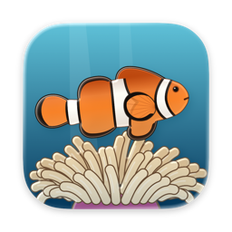

Privacy policy
Anemone Is My Home · effective 5 October 2026
Anemone Is My Home collects no data about you. It has no accounts, no analytics, no advertising and no tracking, and it sends nothing about you or your Mac anywhere. It cannot reach the internet at all: macOS keeps every App Store app in a sandbox, and this one has never asked to be let out of it onto the network.
What stays on your Mac
Your tank, with its fish, coins, packs bought with coins and your settings, is saved in a file inside the app's own folder on your Mac. The game never sends it anywhere. It only goes where you take it yourself, such as into a Time Machine backup or across to a new Mac with Migration Assistant.
Purchases
Packs bought for real money are sold by Apple through the App Store. The game asks Apple which packs you own and what they cost, so it can put them in your tank and show their prices in the shop; it never sees your payment details or your Apple Account. Apple's handling of your purchases is covered by Apple's privacy policy.
Crash reports from Apple
If you have turned on in , Apple may pass the developer a report when the game crashes, with your Mac's model, its version of macOS and where in the game it went wrong, and counts of how many people use it. Nothing in them says who you are. That is Apple's setting and your choice; the game itself sends nothing.
This website
These pages load nothing from anyone else: no fonts, scripts or trackers. They are hosted on GitHub Pages, which keeps its own record of visits, including visitors' IP addresses, for security, as GitHub's privacy statement describes.
Children
Since the game collects no data from anyone, it collects none from children.
Changes
If this ever changes, this page will say so first, with a new date at the top.
Contact
Anemone Is My Home is made by Mykhailo Onikiienko. Questions about privacy go to onikiienko.apps@gmail.com. If you write, your email address and what you wrote are kept only to answer you.